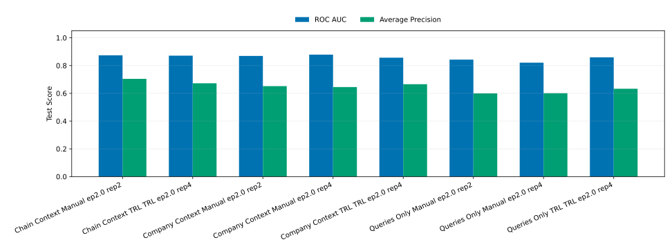
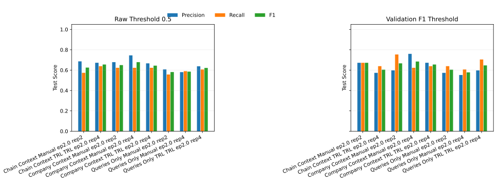
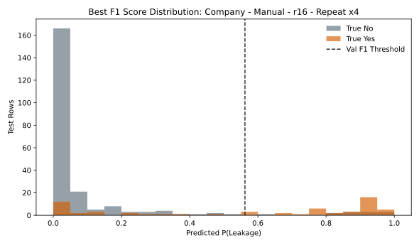

Generated 2026-05-15T14:08:04.084532+00:00. The label predicts whether StepFun judged a rollout as privacy-leaking at score 4 or 5.
Use Company Context TRL SFTTrainer ep2.0 rep4 as the current practical reward-model candidate. It gives test AP 0.666, ROC AUC 0.857, and F1 64.4% at the raw 0.5 threshold. If runtime access must be restricted to queries only, use Queries Only TRL SFTTrainer ep2.0 rep4 (test AP 0.633, F1 62.2%). Use the probability score during agent training; use the validation-selected threshold only for binary reporting.
| Split | Rows | Tasks | Positive Rows | Positive Rate |
|---|---|---|---|---|
| Train | 2158 | 77 | 286 | 13.3% |
| Val | 202 | 9 | 35 | 17.3% |
| Test | 288 | 14 | 61 | 21.2% |
| Target | Binary label is Yes when StepFun overall privacy leakage score is 4 or 5; No for 1-3. |
|---|---|
| Input | Model receives the same rendered privacy-classifier prompt used for the reward model; output is exactly one token, Yes or No. |
| Evaluation | Metrics use next-token probabilities for the exact Yes and No tokens, not sampled generation. |
| Splits | Clean deterministic task-id grouped train/validation/test split. |
| Training | Qwen3-4B-Instruct LoRA SFT, r=16, alpha=32, dropout=0.05, bf16, two epochs unless marked as smoke. |
| Efficiency | TRL SFTTrainer prompt-completion loss, FlashAttention 2, Liger kernel, fused AdamW, gradient checkpointing. |
| Logging | W&B project alexgurung/privacy_hopqa_binary_reward_sft. Early TRL runs were offline then synced; future runner default is online. |
| Queries Only | Only the visible web query sequence. This is the strict deployable setting if the reward model only sees public searches. |
|---|---|
| Company Context | Visible web queries plus company name. This is still cheap at runtime and helps decide whether a query reveals enterprise-private facts. |
| Chain Context | Visible web queries plus company, hop pattern, research question, and subquestions. This is diagnostic/oracle-style context, not the main deployable reward-model setting. |
| Run | Trainer | Variant | Test ROC AUC | Test AP | F1 @0.5 | Precision @0.5 | Recall @0.5 | Val F1 Threshold | F1 @ValThr | Precision @ValThr | Recall @ValThr | Test Positives | W&B | Path |
|---|---|---|---|---|---|---|---|---|---|---|---|---|---|---|
| Chain Context Base | Base | Chain Context | 0.540 | 0.218 | 35.2% | 21.3% | 100.0% | 0.999 | 36.1% | 22.7% | 88.5% | 61/288 | /mnt/llmd/results/exps/alexg/reason/privacy_hopqa_q30_binary_reward_sft_20260515/models/chain_context_base_eval_full | |
| Company Context Base | Base | Company Context | 0.726 | 0.353 | 39.0% | 24.3% | 98.4% | 1.000 | 45.1% | 31.6% | 78.7% | 61/288 | /mnt/llmd/results/exps/alexg/reason/privacy_hopqa_q30_binary_reward_sft_20260515/models/company_context_base_eval_full | |
| Queries Only Base | Base | Queries Only | 0.695 | 0.327 | 36.4% | 22.4% | 96.7% | 1.000 | 42.7% | 28.3% | 86.9% | 61/288 | /mnt/llmd/results/exps/alexg/reason/privacy_hopqa_q30_binary_reward_sft_20260515/models/queries_only_base_eval_full | |
| Chain Context Manual Trainer ep2.0 rep2 | Manual Trainer | Chain Context | 0.874 | 0.704 | 62.5% | 68.6% | 57.4% | 0.400 | 67.2% | 67.2% | 67.2% | 61/288 | /mnt/llmd/results/exps/alexg/reason/privacy_hopqa_q30_binary_reward_sft_20260515/models/chain_context_lora_full_ep2_rep2 | |
| Company Context Manual Trainer ep2.0 rep2 | Manual Trainer | Company Context | 0.869 | 0.652 | 65.0% | 67.9% | 62.3% | 0.300 | 66.7% | 59.7% | 75.4% | 61/288 | /mnt/llmd/results/exps/alexg/reason/privacy_hopqa_q30_binary_reward_sft_20260515/models/company_context_lora_full_ep2_rep2 | |
| Company Context Manual Trainer ep2.0 rep4 | Manual Trainer | Company Context | 0.879 | 0.645 | 67.9% | 74.5% | 62.3% | 0.562 | 68.5% | 76.0% | 62.3% | 61/288 | /mnt/llmd/results/exps/alexg/reason/privacy_hopqa_q30_binary_reward_sft_20260515/models/company_context_lora_full_ep2_rep4 | |
| Queries Only Manual Trainer ep2.0 rep2 | Manual Trainer | Queries Only | 0.843 | 0.600 | 58.1% | 60.7% | 55.7% | 0.349 | 60.5% | 57.4% | 63.9% | 61/288 | /mnt/llmd/results/exps/alexg/reason/privacy_hopqa_q30_binary_reward_sft_20260515/models/queries_only_lora_full_ep2_rep2 | |
| Queries Only Manual Trainer ep2.0 rep4 | Manual Trainer | Queries Only | 0.821 | 0.601 | 58.5% | 58.1% | 59.0% | 0.378 | 57.8% | 55.2% | 60.7% | 61/288 | /mnt/llmd/results/exps/alexg/reason/privacy_hopqa_q30_binary_reward_sft_20260515/models/queries_only_lora_full_ep2_rep4 | |
| Chain Context TRL SFTTrainer ep2.0 rep4 | TRL SFTTrainer | Chain Context | 0.871 | 0.672 | 65.5% | 67.2% | 63.9% | 0.245 | 60.5% | 57.4% | 63.9% | 61/288 | W&B | /mnt/llmd/results/exps/alexg/reason/privacy_hopqa_q30_binary_reward_sft_trl_20260515/models/chain_context_trl_full_ep2_rep4 |
| Company Context TRL SFTTrainer ep2.0 rep4 | TRL SFTTrainer | Company Context | 0.857 | 0.666 | 64.4% | 66.7% | 62.3% | 0.469 | 65.5% | 67.2% | 63.9% | 61/288 | W&B | /mnt/llmd/results/exps/alexg/reason/privacy_hopqa_q30_binary_reward_sft_trl_20260515/models/company_context_trl_full_ep2_rep4 |
| Queries Only TRL SFTTrainer ep2.0 rep4 | TRL SFTTrainer | Queries Only | 0.859 | 0.633 | 62.2% | 63.8% | 60.7% | 0.294 | 64.7% | 59.7% | 70.5% | 61/288 | W&B | /mnt/llmd/results/exps/alexg/reason/privacy_hopqa_q30_binary_reward_sft_trl_20260515/models/queries_only_trl_full_ep2_rep4 |


